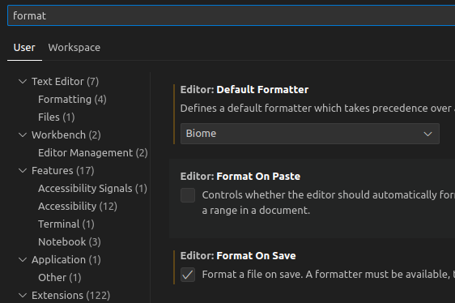

Node 03 - 👨🏻🚀 Commence à linter et à formater ton code en utilisant Biome
Objectifs
- Comprendre ce qu'est un linter.
- Installer et utiliser Biome.
Pré-requis
- 1
Valider la quête suivante
Quêtes liées
Introduction
Les linters sont des outils d’analyse statique du code qui aident à détecter des erreurs, des incohérences de style et des problèmes potentiels avant l'exécution du programme. Ils sont particulièrement utiles pour garantir la qualité du code, améliorer la maintenabilité et assurer la cohérence entre les membres d'une équipe.
Un linter permet :
- Une détection d'erreurs précoces : Il identifie les erreurs courantes de syntaxe et de logique.
- Le respect de conventions : Il applique des règles de style uniformes sur l’ensemble du projet.
- L'amélioration des performances : Il repère des pratiques inefficaces et des optimisations possibles.
- De faciliter la relecture de code : Il réduit les différences de style, permettant de se concentrer sur la logique métier.
Traditionnellement, l'écosystème JavaScript et TypeScript repose sur ESLint pour l’analyse statique et Prettier pour le formatage automatique du code. Cependant, une alternative moderne émerge : Biome.
Sommaire
Biome : Une alternative à ESLint + Prettier
Biome est un outil unifié qui remplace ESLint, Prettier et d'autres outils d'analyse tout en étant extrêmement rapide et facile à configurer.
Biome a plusieurs avantages :
- 🔄 Tout-en-un : Linter, formateur et outil d'analyse.
- 🚀 Ultra rapide grâce à Rust.
- 📦 Aucune dépendance lourde : Contrairement à ESLint et Prettier qui nécessitent plusieurs configurations et plugins.
- 🔧 Configuration simplifiée : Facilité d’installation et de maintenance.
Pour comparer :
| Fonctionnalité | Biome | ESLint + Prettier |
|---|---|---|
| Vitesse | 🚀 Ultra rapide | 🐢 Plus lent |
| Linter | ✅ Inclus | ✅ Nécessite ESLint |
| Formateur | ✅ Inclus | ✅ Prettier requis |
| Configuration | 📦 Simple | ⚙️ Parfois complexe |
| Dépendances | 📉 Aucune (standalone) | 📦 Plusieurs packages |
Installation et configuration
- 1
Initialise un projet node
Crée un "bac à sable" pour expérimenter sans risques avec :
bashcd ~ # Se placer dans le répertoire utilisateur mkdir sandbox-biome cd sandbox-biome npm init -y - 2
Installe Biome
Dans ton projet node, lance la commande :
bashnpm install --save-dev --save-exact @biomejs/biomeInfoL'option
--save-exactgarantit que tous les membres du projet utilisent la même version de Biome. - 3
Configure Biome
Initialise la configuration de Biome avec :
bashnpx @biomejs/biome initCela génère un fichier
biome.jsonavec la configuration par défaut. - 4
Configure Biome dans VSCode
Dans VSCode, installe l'extension Biome.
Active ensuite le formatage automatique :
- Ouvre les paramètres (
Ctrl + ,sur Windows/Linux,Cmd + ,sur macOS). - Tape format dans la barre de recherche.
- Sélectionne Biome comme formateur par défaut dans la liste
Editor: Default Formatter. - Coche la case
Editor: Format On Save.

- Ouvre les paramètres (
Utilisation
Pour tester, crée un fichier index.js dans ton projet node avec :
let number = 2;
function doubleIt (value)
{
return value * 2;
}
doubleIt(number);
Si tu as activé le Format On Save dans VSCode, Biome reformate automatiquement le fichier quand tu sauvegardes :
var number = 2;
function doubleIt(value) {
return value * 2;
}
doubleIt(number);
Vérifier un fichier
Lance la commande :
npx @biomejs/biome check index.js
Biome affiche des erreurs pour tous ce qui ne respecte pas ses règles de codage :
index.js:1:1 lint/style/noVar FIXABLE ━━━━━━━━━━━━━━━━━━━━━━━━━━━━━━━━━━━━━━━━━━━━━━━━━━━━━━━━━━━━
! This let declares a variable that is only assigned once.
> 1 │ let number = 2;
│ ^^^^^^^^^^^^^^
2 │
3 │ function doubleIt(value) {
ℹ 'number' is never reassigned.
ℹ Unsafe fix: Use 'const' instead.
1 │ - let·number·=·2;
1 │ + const·number·=·2;
2 2 │
3 3 │ function doubleIt(value) {
━━━━━━━━━━━━━━━━━━━━━━━━━━━━━━━━━━━━━━━━━━━━━━━━━━━━━━━━━━━━━━━━━━━━━━━━━━━━━━━━━━━━━━━━━━━━━━━
Checked 1 file in 5ms. No fixes applied.
Found 1 warning.
Ici, tu dois remplacer le mot-clé let par const.
Corriger automatiquement les erreurs
Utilise l'option --write pour appliquer les corrections :
npx @biomejs/biome check --write index.js
Biome corrigera toutes les erreurs qui peuvent l'être de manière sûre.
Résumé
- Biome est un outil rapide et tout-en-un qui remplace ESLint + Prettier.
- Installe-le avec
npm install --save-dev --save-exact @biomejs/biome. - Crée un fichier de configuration avec
npx @biomejs/biome init. - Vérifie des fichiers avec
npx @biomejs/biome check <fichiers>. - Applique des corrections automatiques avec
npx @biomejs/biome check --write <fichiers>.
Pour en savoir plus :
Site officiel de Biome
Ressources partagées sur cette quête
- Ca explique comment lier prettier + eslint dans vscodehttps://www.youtube.com/watch?v=lGCHjQl6XLw&ab_channel=DevTheory